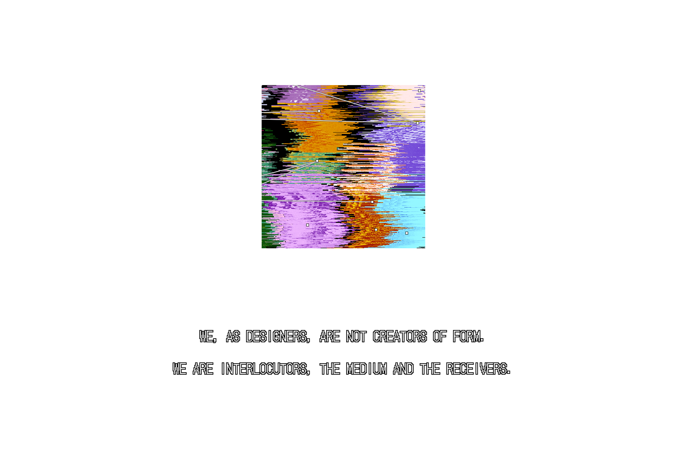
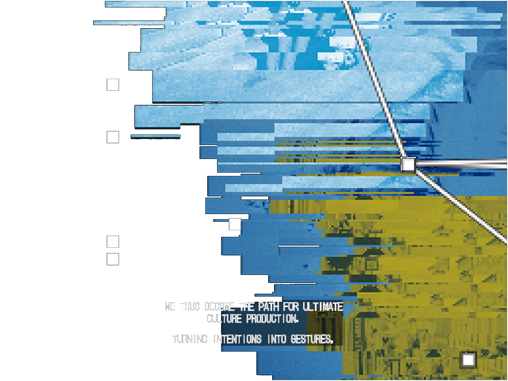
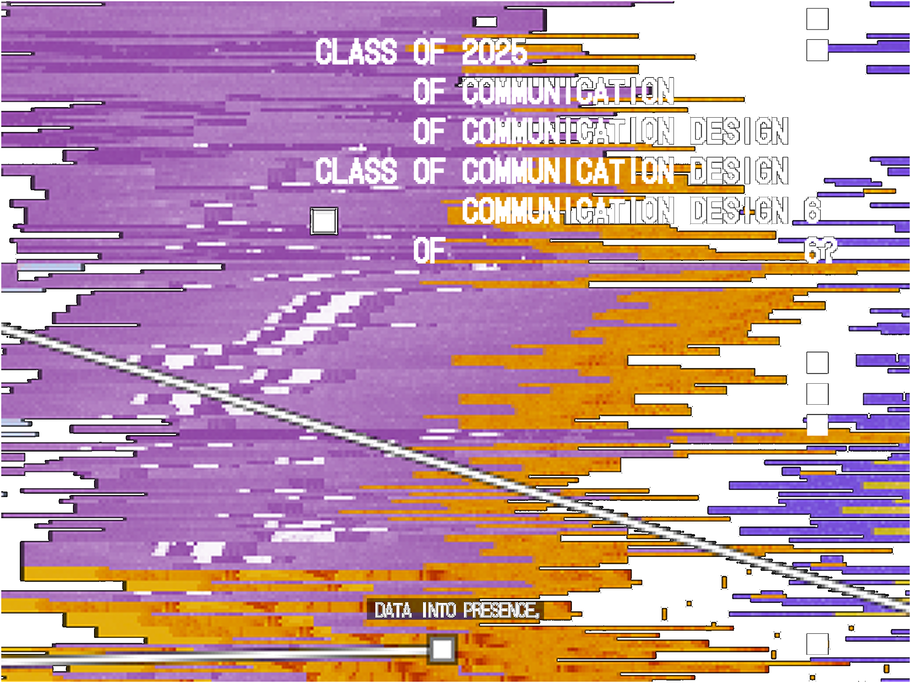

SaaS Dashboard Design
Senior Product Designer • September 2024 - December 2024 • Hybrid
Project Background
Designed a comprehensive analytics dashboard for a B2B SaaS platform, enabling business users to monitor key metrics, generate reports, and make data-driven decisions efficiently.

Challenge
The existing dashboard was cluttered with information, making it difficult for users to find relevant insights. Different user roles needed different views, and the system struggled to handle complex data visualization requirements.
Key requirements:
- Clear data hierarchy and information architecture
- Customizable views for different user roles
- Intuitive data filtering and comparison tools
- Responsive design for various screen sizes
Research Process
Conducted stakeholder interviews and shadowing sessions with users to understand their daily workflows. Analyzed usage patterns and identified which metrics truly drove decision-making versus which were rarely used.

Design Strategy
Implemented a modular dashboard system where users can customize their view with drag-and-drop widgets. Created a clear visual hierarchy using size, color, and positioning to guide attention to critical metrics. Added contextual filters and comparison periods for deeper analysis.

Results
Post-launch user testing showed 60% faster insight discovery, 45% reduction in support tickets related to reporting, and 90% user satisfaction with the customization capabilities. The design system was adopted across other company products.